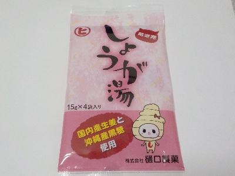
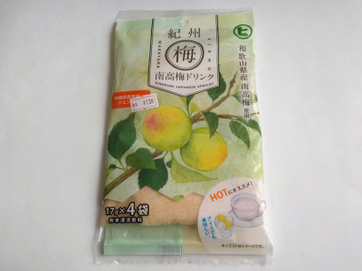
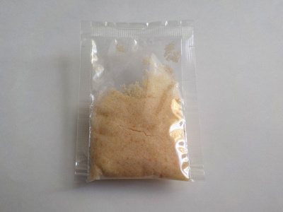

樋口製菓のしょうが湯。
2024/03/03

熱湯80mlで作る少量タイプのしょうが湯です。
マグカップでお湯を多めにして飲みました。薄く作ったので、マイルドで飲み易ったです。私にはこれくらいが丁度いいです。
今度飲むときに時間があったら、カタクリ粉をプラスして飲んでみようと思いました。
広島県尾道市向東町3883-1
2024/03/03

熱湯80mlで作る少量タイプのしょうが湯です。
マグカップでお湯を多めにして飲みました。薄く作ったので、マイルドで飲み易ったです。私にはこれくらいが丁度いいです。
今度飲むときに時間があったら、カタクリ粉をプラスして飲んでみようと思いました。
2022/10/30

梅ドリンクをホットで飲みました。

サラサラした粉末じゃなくて、ギュッと詰まったような感じでした。
砂糖が多いからかな。
味は想像通りでした。期待通りの梅味と甘さでした。